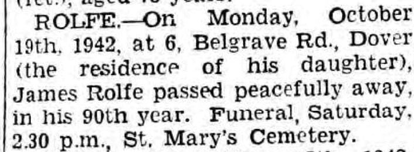

James Rolfe 1853 - 1942
[ Home ] | [ Calendar ] | [ Surnames Index ] | [ Errors ] | [ Family History ]A coachman and the child of William Rolfe (an agricultural labourer) and Maria Tutt, James Rolfe, the first cousin three-times-removed on the father's side of Nigel Horne, was born in Cheriton, Kent, England on 13 Jan 18531,2,3,4, was baptised there at St Martin's Church on 20 Mar 1853 and married Elizabeth Waite (with whom he had 7 children: Emily, Nelly, Frederick, Mary Jane, James, Beatrice and Alfred) in Henley on Thames, Oxfordshire, England around Aug 18785.
During his life, he was living at Horn Street in Cheriton on 7 Apr 18611 and on 2 Apr 18712; at Casement Cottage in Cheriton on 3 Apr 18816; at Cheriton Court in Cheriton on 5 Apr 18917; and at 6 Belgrave Road, Dover, Kent, England on 29 Sept 19398 - less than a mile from his first cousin once-removed on his mother's side Lily Tunbridge who was living at 11 Clarendon Street in Dover which is where he died on 19 Oct 19424.
Parents
- William was born in 1821
- Maria was born c. 1825
Children
- Emily was born in 1879
- Nelly was born in 1880
- Frederick was born in 1881
- Mary Jane was born on 21 Jun 1884
- James was born in 1887
- Beatrice was born in 1889
- Alfred was born in 1891
Citations
- 1861 England, Wales & Scotland Census - Findmypast (was age 7 and the son of the head of the household)
- 1871 England, Wales & Scotland Census - Findmypast (was age 17 and the son of the head of the household)
- England & Wales births 1837-2006 - Findmypast
- England & Wales deaths 1837-2007 - Findmypast
- England & Wales Marriages 1837-2005 - Findmypast
- 1881 England, Wales & Scotland Census - Findmypast (was age 27 and the head of the household)
- 1891 England, Wales & Scotland Census - Findmypast (was age 38 and the head of the household)
- 1939 Register - Findmypast (was recorded at this address)
Media
Dover Express - 23 Oct 1942

England & Wales deaths 1837-2007 - BMD/D/1942/4/AZ/000791/049
England & Wales births 1837-2006 - BMD/B/1853/1/IS/001278/026
1939 Register Transcription - TNA-R39-1709-1709D-002-11
1891 England, Wales & Scotland Census Transcription - GBC-1891-0006020827
England & Wales marriages 1837-2008 Transcription - BMD-M-1878-3-AZ-000225-374
England Births & Baptisms 1538-1975 - R_885431822
Kent Baptisms - GBPRS/CANT/B/96414839
Family Tree

Map
Generated by ged2site. Last updated on Jul 3, 2024
Known Issues
Listed in the residence for 29 Sep 1939, but spouse Elizabeth Waite is not